cfneutralize
Returns the no arbitrage drift coefficients of an AJD process. Part of the CFH Toolbox.
Syntax
[K0Q K1Q] = CFNEUTRALIZE(K0,K1,H0,H1,R0,R1,Q0,Q1,L0,L1,jump)
Out of (NX) processes specified by the AJD coefficients this function returns the no-arbitrage adjusted drift coefficients K0Q and K1Q, which equal to K0 and K1, except for the first (NA) coefficients which are now risk-adjusted drift coefficients of the first (NA) asset processes. The number of asset processes (NA) is given by the length of Q0, the vector of dividend yield constants, or by the number of columns in Q1, the (NX)x(NA) matrix of dividend yield coefficients of each asset process. If both are left empty, it is implicitly assumed that (NA)=1, and only the first process is treated as a traded asset.
Input Arguments
K0,K1 are the unadjusted drift coefficients, Q0 is an (1)x(NA) vector of constant dividend yields, Q1 is a (NX)x(NA) array of linear dividend yield coefficients.
Contents
Example 1: Black Scholes Model
In the Black Scholes model, the physical dynamics of the logarithmic spot process are:
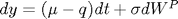
where 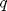 is a constant dividend yield. The risk neutral dynamics are
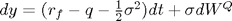
This feat can be achieved by cfneutralize:
mu = 0.15; q = 0.03; rf = 0.05; sigma = 0.25;
Translating into AJD coefficients...
K0 = mu-q; H0 = sigma^2;
...and transforming into risk-neutral coefficients:
[K0Q K1Q] = cfneutralize(K0,[],H0,[],rf,[],q)
K0Q =
-0.0112
K1Q =
0
Example 2: Heston model with jumps
The underlying asset process is
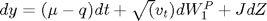
and the underlying risk neutral variance dynamics and jump transforms are
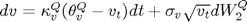
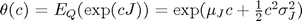
Assuming that 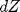 jumps with intensity 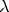 under the risk neutral measure, the drift adjusted asset process is
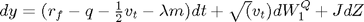
where 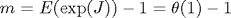. Again, we can perform this transformation via cfneutralize:
mu = 0.15; q = 0.03; rf = 0.05; kappa = 0.85; theta = 0.25^2; sigma = 0.1; rho = -0.7; par.MuJ = [-0.25 0]'; par.SigmaJ = [0.20 0 ; 0 0]; lambda = 0.15; % Translating into AJD coefficients... K0 = [mu-q ; kappa*theta]; K1 = [0 0 ; 0 -kappa]; H0 = [0 0 ; 0 0]; H1 = zeros(2,2,2); H1(:,:,2) = [1 sigma*rho ; sigma*rho sigma^2]; jump = @(c) cfjump(c,par,'Merton'); [K0Q K1Q] = cfneutralize(K0,K1,H0,H1,rf,[],q,[],lambda,[],jump)
K0Q =
0.0409
0.0531
K1Q =
0 -0.5000
0 -0.8500
Example 3: State dependent dividend yields
The underlying asset and dividend processes are
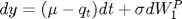
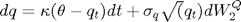
with 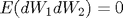.
The corresponding risk neutral log asset process is
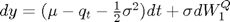
The coefficients are:
mu = 0.15; rf = 0.05; kappa = 0.5; theta = 0.03; sigma = 0.25; sigmaQ = 0.10; K0 = [mu ; kappa*theta]; K1 = [0 -1 ; 0 -kappa]; H0 = [sigma^2 0 ; 0 0]; H1 = zeros(2,2,2); H1(2,2,2) = sigmaQ^2; Q1 = [0 1]';
We may now find and compare the risk neutral and physical drift coefficients:
[K0Q K1Q] = cfneutralize(K0,K1,H0,H1,rf,[],[],Q1); [K0 K0Q] [K1 K1Q]
ans =
0.1500 0.0188
0.0150 0.0150
ans =
0 -1.0000 0 -1.0000
0 -0.5000 0 -0.5000